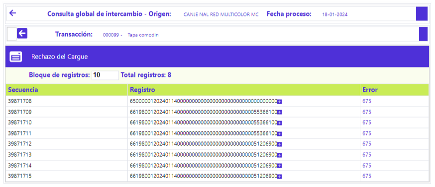

Rechazo cargue - Consulta global de intercambi
Mediante esta opción se posibilita la consulta de los registros de transacciones que no fueron leídos del archivo que contenía el movimiento dentro del que viajaban dichos registros. El formulario cuenta en la parte superior con un botón para volver al formulario principal de la Consulta global de intercambio.

Secuencia |
Campo de salida que ilustra el número con el que se identifica el cargue de archivos o integración del movimiento ingresado por un mismo origen para una misma fecha de proceso. |
Registro |
Muestra la cadena de caracteres que conforman el registro físico no leído. |
Error |
Muestra el código de error asociado al registro rechazado. |
Movimiento rechazado día anterior | Tapa contable | Contracargos | Fraudes | Movimiento débito | Intercambio | Pendientes débito | Rechazo cargue convenios